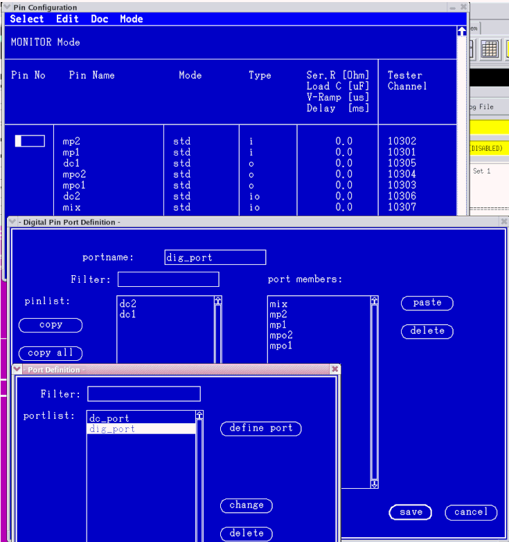
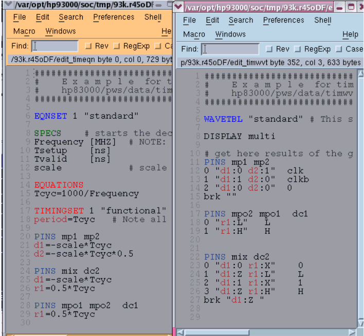
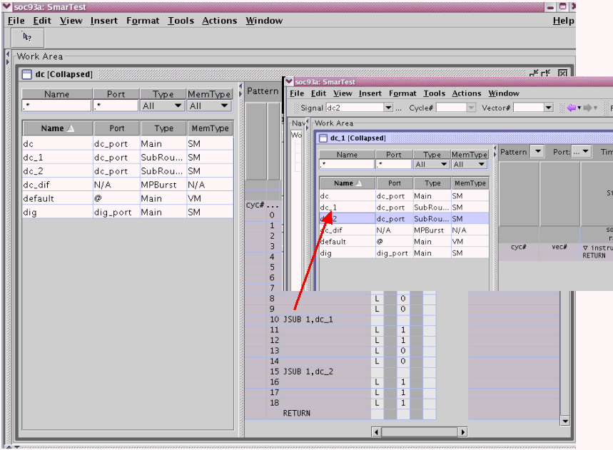
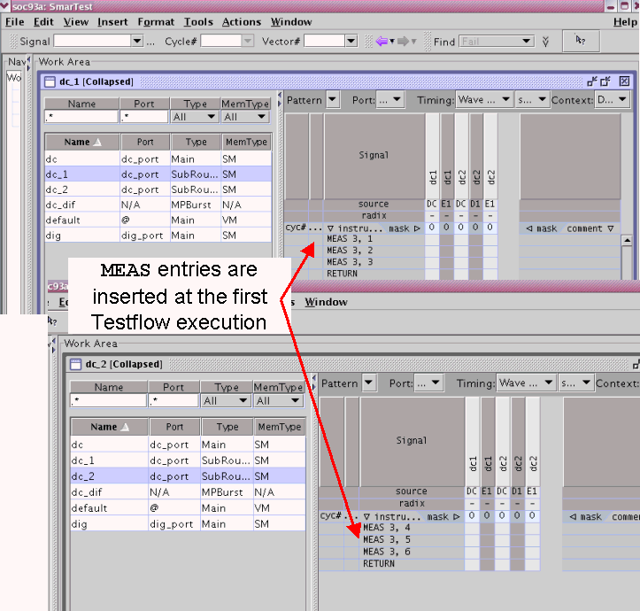

Configuring Ports, Pins, Timing, Vectors and Test Methods
Procedures
Ports & Pins
- Define the ports
- Assign the pins to ports
- Maximum number of ports 255 +@=256
The figure below shows an example of the port and pin configuration.

Timing
Define a standard (non-multi-port) timing unless you wish to make additional time reduction. Otherwise, multi-port timing is not requiredThe figure below shows an example of the timing configuration.

Vectors
- Define the main patterns for the multi-port bursts. More information on this can be found in Creating a multiport burst.
- Define a sub-pattern (not a main pattern) for the port on which the PPMU test is to be run and call this sub-pattern from the main pattern of this port
- Integrate the main patterns into a multi-port burst
- Set up the call to the DC sub-routine
The figure below shows an example of a DC sub-routine call

Test Method
Create a test method that:- uses the PPMU_XXX API's to create a PPMU test for one or more pins of the desired port
- uses the PATTERN_CONTROLLER and PATTERN API's to specify a sub-pattern from which this test
will be run
The figure below shows how the DC subroutines and test methods result in the insertion of MEAS entries into the pattern data.

Functional changes
- Introduced before SmarTest 6.3.2
- SmarTest 7.2.0: Max number of ports increased to 256